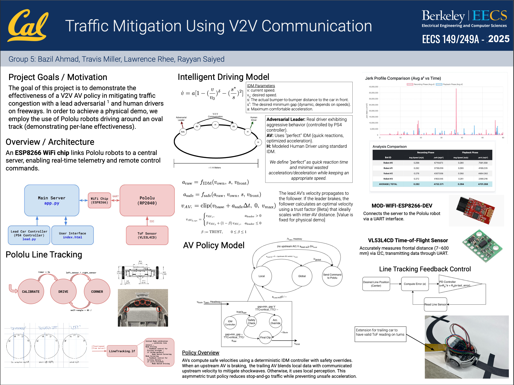

Financial Regime Detection
This was a project I worked on for GenPf where I created the core ML engine to highlight regimes in history that follow closely to paramters passed in by a user.
This was a project I worked on for GenPf where I created the core ML engine to highlight regimes in history that follow closely to paramters passed in by a user.
A project for my EECS149 class.
Under Construction: Using different learning paradigms to see whats the best at playing variations of Pong.
B.S. Electrical Engineering & Computer Science
Relevant coursework (ordered by how much I enjoyed them):
Physics 7A - Physics (Mechanics and wave motion)
CS61A - The Structure & Interpretation of Computer Programs
EECS126 - Probability & Random Processes
CS189 - Machine Learning
EECS149 - Intro to Embedded and Cyber-Physical Systems
CS170 - Efficient Algorithms & Intractable Problems
EECS127 - Optimization Models in Engineering
CS162 - O.S. & System Programming
CS70 - Discrete Math & Probability Theory
CS161 - Computer Security
CS61B - Data Structures
CS61C - Computer Architecture
Physics 7B - Physics (Heat, E&M)
Math 110 - Abstract Linear Algebra
EECS16A - Designing Information Devices & Systems I
EECS16B - Designing Information Devices & Systems II
Math 54 - Linear Algebra & Diff. Eq.
Math 53 - Multivariable Calculus
Math 128A - Numerical Analysis
Amazon
Worked on Alexa+ architecture (a multi-expert system, analagous to Mixture-of-Experts). Reduced user-perceived defection (CPDR) by ~9% for the Group & Endpoint Management expert by improving architectural coherence and routing behavior at the top-level decision layer.
Designed the core inference component of a document-generation pipeline, classifying action types from unstructured staff report titles. This classification acts as the primary decision signal for downstream generation, improving end-to-end report scaffolding accuracy from ~50% to ~80%. Broke the monolith codebase to a microservice architecture (GCP).
Designed Regime Analysis: an evaluation pipeline for high-dimensional macroeconomic time series, combining non-linear embeddings (t-SNE), clustering, and nearest-neighbor logic. The system maps user-specified economic conditions to historically similar regimes while explicitly eliminating thin or unstable clusters, with systematic sensitivity analysis over embedding and clustering hyperparameters to study robustness and interpretability.
Developed the real-time face recognition system using MTCNN detection and FaceNet embeddings with cosine similarity matching. Improved robustness to lighting, pose, and occlusion through careful preprocessing and data handling, increasing identity recognition accuracy by ~60% on diverse and partially occluded datasets while maintaining 30+ FPS performance.
I think about learning systems as optimization problems, reason about robustness and failure modes, and care deeply about the gap between theory and deployment. Below, I've noted which courses and experiences shaped each skill area (ordered by impact).
Huge fan of great fantasy worldbuilding. Current favorite author is Brandon Sanderson. Currently reading "The Way of Kings".
A Rams fan (since they came back to LA in 2016).
Always wanted to blog about new movies I watch!
last updated: December 2024
What I'm focused on right now:
This is a /now page. Update it regularly to share what you're currently up to.